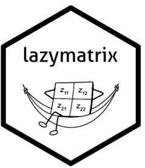

Constructs a LazyMatrix object.
LazyMatrix.RdConstructs a LazyMatrix object.
Examples
mat_a <- matrix(1:6, nrow=3, ncol=2)
lazy_a <- LazyMatrix(mat_a, scale="sd", location="mean")
lazy_a
#> An object of class "LazyMatrix"
#> Slot "data":
#> [,1] [,2]
#> [1,] 1 4
#> [2,] 2 5
#> [3,] 3 6
#>
#> Slot "col_scales":
#> [1] 1 1
#>
#> Slot "row_scales":
#> [1] 2.12132 2.12132 2.12132
#>
#> Slot "col_locations":
#> [1] 2 5
#>
#> Slot "row_locations":
#> [1] 2.5 3.5 4.5
#>